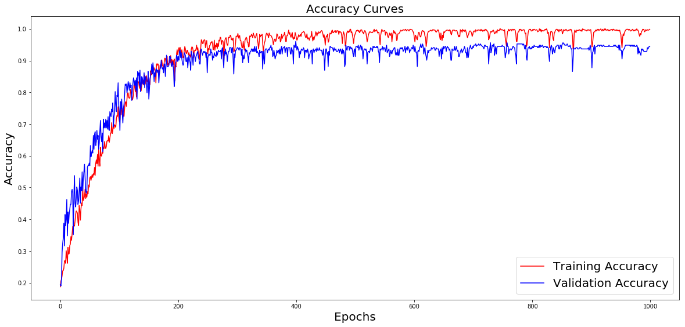
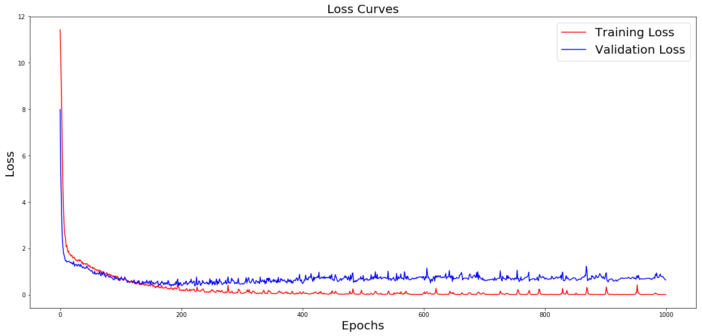
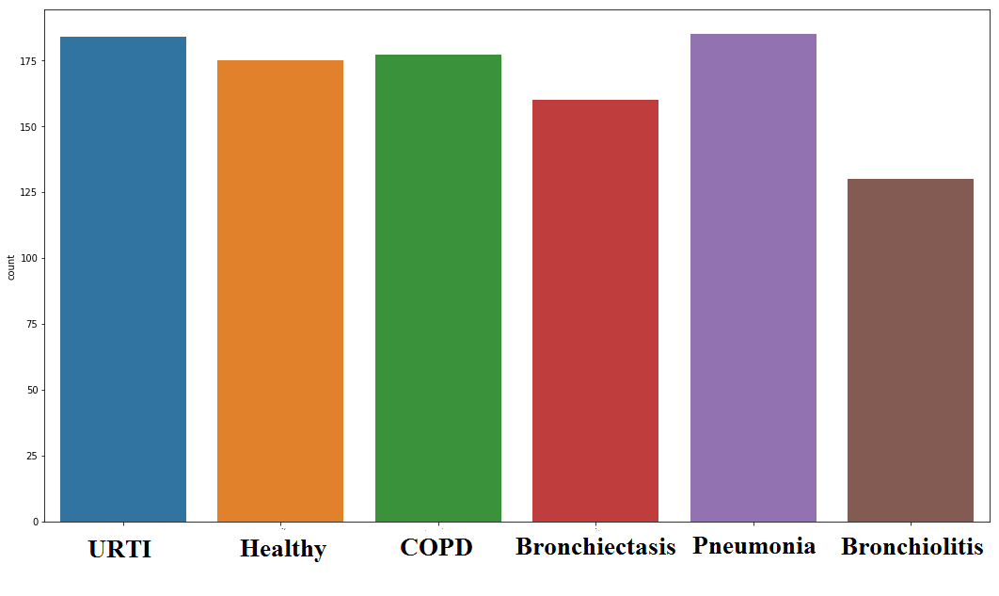
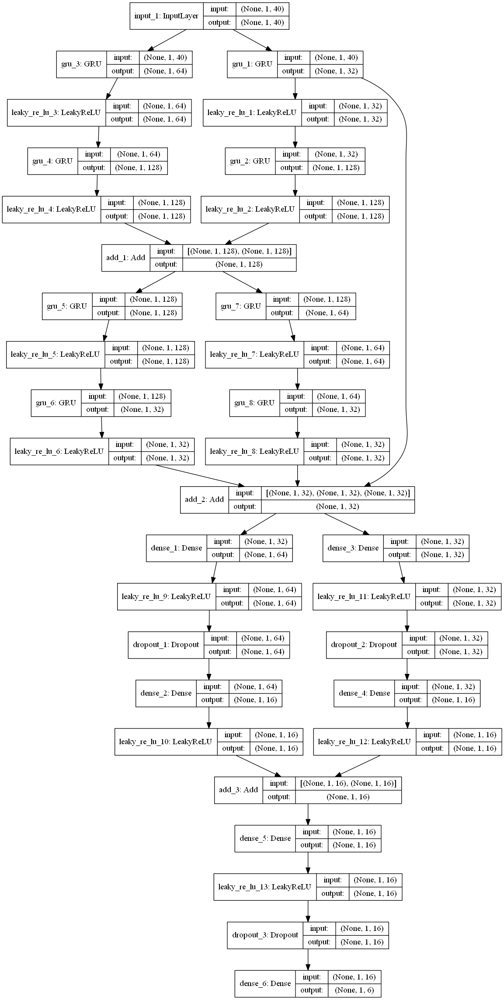
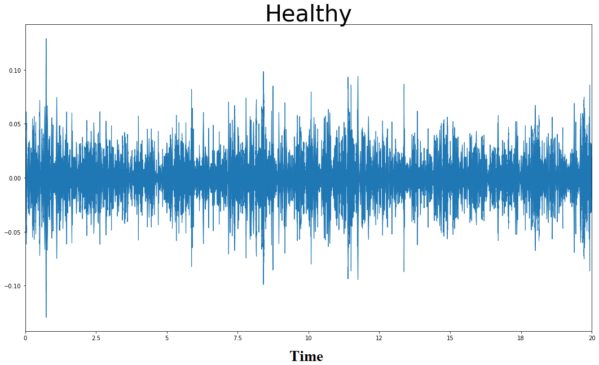
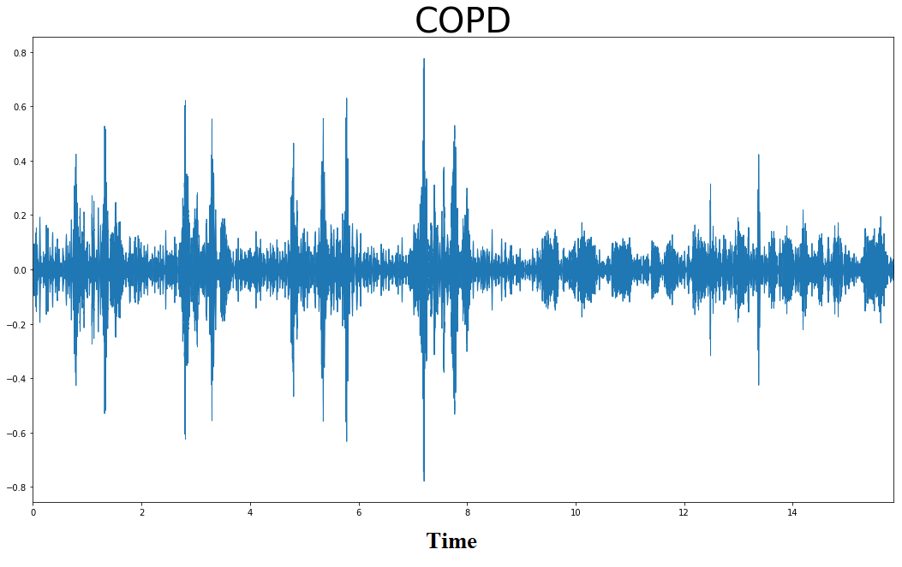
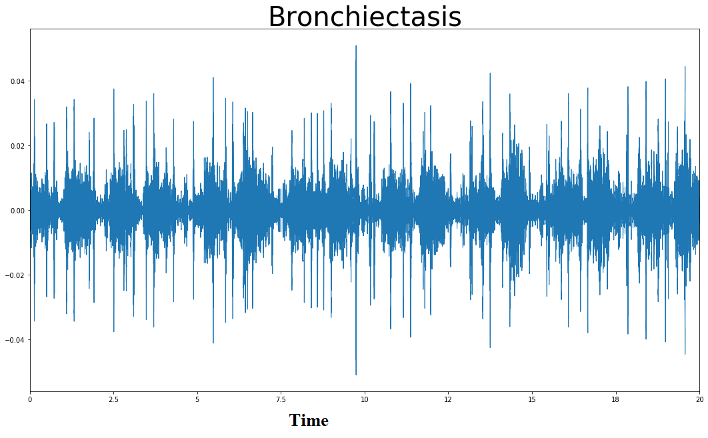
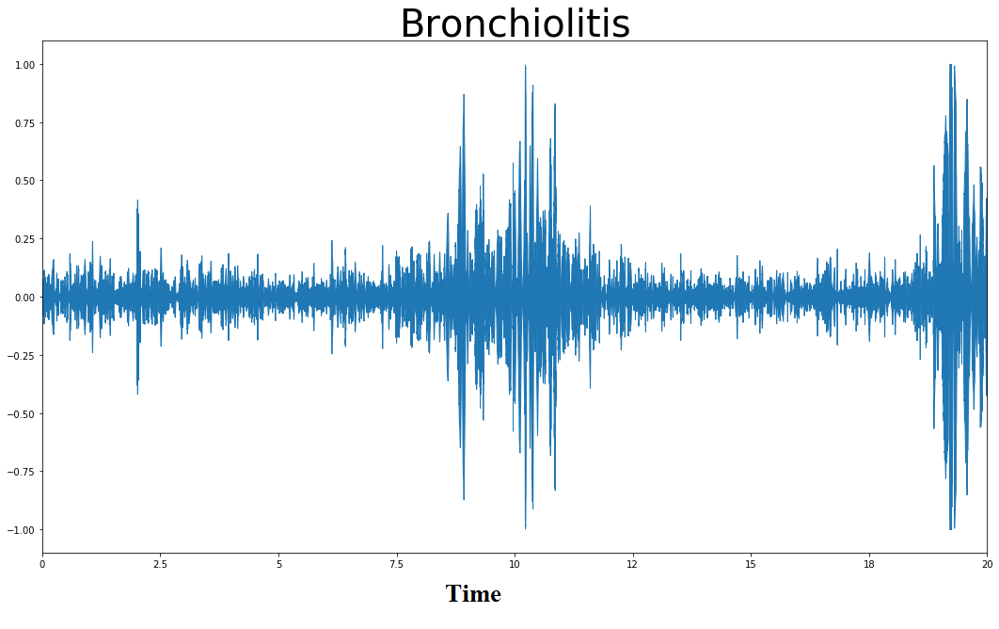
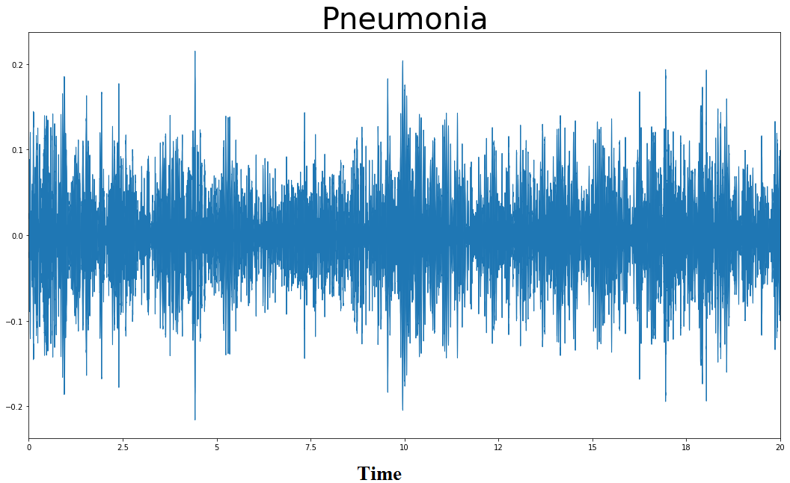

Legacy visualization for the RespiNet research prototype. Historical metrics on this page are not clinically valid; use the React application and rerun patient-level evaluation before publishing performance claims.
Record directly from your microphone or upload a
.wav file. Hard limit:
30 seconds. The audio is sent to your
local model for real classification.
Drag & drop a .wav file here
— or —
Or try one of our sample recordings below
Archived legacy metrics from an earlier six-class experiment on the ICBHI 2017 Challenge dataset. They are not current, patient-level, or clinically valid and must not be cited as RespiNet performance.


Breakdown of model performance for each of the six disease categories.
| Class | Precision | Recall | F1-Score | Support | Performance |
|---|---|---|---|---|---|
| Macro Avg | 0.96 | 0.97 | 0.96 | 253 | |
| Weighted Avg | 0.96 | 0.96 | 0.96 | 253 |
Real examples from the ICBHI 2017 dataset showing audio waveforms, extracted MFCC features, and the model's classification output.
Legacy six-class distribution retained for historical reference. The corrected pipeline no longer performs class-specific COPD capping.

Original class distribution before augmentation
Legacy architecture figure retained for historical reference. It does not describe the current Conv1D plus stacked bidirectional GRU source model.

Each disease produces a characteristic waveform pattern. The model learns these patterns through MFCC feature extraction.




